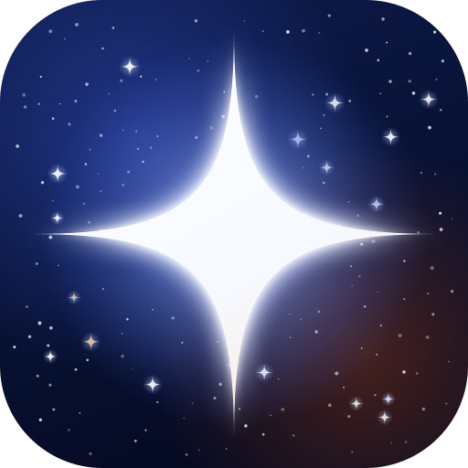
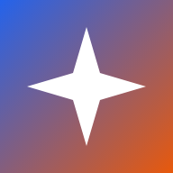

Matematica e Fisica, da vedere e da toccare.
Disegna funzioni come su una calcolatrice grafica, fai calcoli scientifici, sperimenta con leve, pendoli e proiettili e ripassa la teoria con esempi e quiz. Tutto nel browser, gratis.
Tutor IA

Il tuo tutor di matematica e fisica
Fotografa l'esercizio o scrivilo: ti aiuto a risolverlo.
Scatta una foto al problema del libro o della verifica, oppure scrivi la domanda qui sotto.
Strumenti
Grafici
Calcolatrice grafica: scrivi le espressioni e guardale prendere forma.
- funzioni, curve implicite e disequazioni
- slider animabili e punti trascinabili
- zeri, massimi, minimi e intersezioni
Calcolatrice
Scientifica, con cronologia, variabili, frazioni, gradi e radianti.
- trigonometria, logaritmi, potenze
- fattoriali e combinazioni
- il risultato precedente con Ans
Laboratorio di Matematica
Concetti che diventano visibili muovendo uno slider.
- circonferenza goniometrica
- derivata e retta tangente
- integrali e somme di Riemann
- equazioni di 2° grado passo per passo
Laboratorio di Fisica
Simulazioni con misure in tempo reale e oggetti da trascinare.
- leve dei tre generi
- piano inclinato con attrito
- moto parabolico su Terra, Luna, Marte
- pendolo e molla con energia
Teoria
Le formule che contano, spiegate con esempi e verificate con un quiz.
- funzioni, trigonometria, derivate, integrali
- cinematica, dinamica, energia, leve
- link diretti a grafici e simulazioni
L'app di Astral

Astral sul tuo telefono
Installala sulla schermata Home: si apre a schermo intero come un'app e funziona anche senza internet. Gratis, senza passare dagli store.
- Apri Astral nel browser Chrome.
- Premi il pulsante Installa l'app in alto, oppure il menu ⋮ → Installa app.
- Conferma: l'icona compare tra le tue app.
- Apri Astral in Safari.
- Tocca il tasto Condividi (il quadrato con la freccia ⬆).
- Scegli Aggiungi alla schermata Home, poi Aggiungi.
- Apri Astral nel browser.
- Clicca l'icona di installazione nella barra degli indirizzi, o il pulsante Installa l'app in alto.